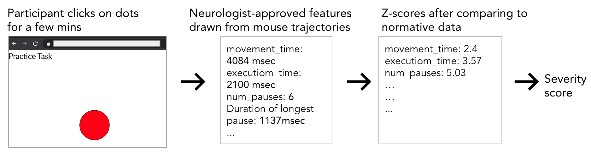
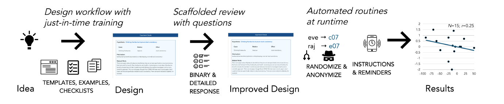

    <!-- begin Research-->
    <div class="row">           
        <div class="maincenter" class="col-sm-12">
            <h2><a name="projects">Main Projects</a></h2>
            
            <!--Begin Helping Hands-->
            <!-- <div id="mainright" class="col-sm-9"> -->
            <div id="maincenter_col" class="col-sm-6">            
                <p><b>
                <font color="#006A96" size="4pt">
                    Citizen-Expert Collaboration with Tools for Assessing Motor Impairment
                </font></b> 
                <br></p>                                
                <p><div class="col-sm-12">
                    <b>At-home Use &#8594  Mouse trajectories &#8594 Interpretable features &#8594 Valid, Reliable Severity Scores</b>
                    <br>                    
                    <!--  -->
                    <!--  -->                    
                    Remote motor performance assessment tools reliably estimate severity of motor impairments with a few minutes of use at home. These systems contribute a novel class of methods to remotely track condition severity without using expert time. At-home deployments have evaluated the tool with three neurological disorder communities.
                    </div></p>
                    

                <p><div class="col-sm-12">
                    <br><b>Clinical Researchers</b> 
                        <a href="https://www.massgeneral.org/neurology/research/laboratory-for-deep-neurophenotyping-anoopum-gupta"> Laboratory for Deep Neurophenotyping at Mass General Hospital</a> &#183;  
                        <a href="https://www.massgeneral.org/doctors/19109/james-berry"> Division of ALS and Motor Neuron Diseases, MGH </a>
                    <br><b>Participants</b> 
                        Amyotrophic Lateral Sclerosis (ALS) &#183; 
                        Ataxia-telangiectasia (via <a href="https://www.atcp.org/">A-T Children's Project</a>) &#183; 
                        Spinocerebellar ataxia (SCA) &#183; 
                        Myasthenia Gravis (MG) 
                    <!-- <br><b>System</b> 
                        <a href="#">Try it »</a> -->
                    <br><b>Slides</b>
                        <a href="talks/2021-05_MGH_Ataxia_Research_Symposium.pdf">2021 Mass General Hospital Ataxia Center Symposium</a>                      
                    <br><b>Writing</b>
                        <b><u>HCI</u></b> 
                        <!-- In preparation &#183; -->
                        <!-- <a href="papers/stash/2022-In Submission-Clinician_Perspectives_for_Telemedicine.pdf"> 2022 In Submission </a> &#183; -->                       
                        <a href="papers/2022-TACCESS-Accuracy_and_Reliability_of_At-home_Quantification.pdf"> 2023 TACCESS </a> &#183;
                        <a href="papers/2020-WISH-Hevelius.pdf">2020 AMIA WISH</a> &#183;
                        <a href="papers/2020-LIMITS.pdf">2020 LIMITS</a> &#183;
                        Abstract at <a href="https://projects.iq.harvard.edu/cnoc-symposium/home"> 
                         Health Data Science Symposium (Smartphones, Wearables, and Health) </a>
                        <br>
                        <b><u>Neurology</u></b>
                        <!-- <a href="papers/2022-TACCESS-Accuracy_and_Reliability_of_At-home_Quantification.pdf"></a>-->                        
                            <a href="https://academic.oup.com/braincomms/article/5/2/fcad064/7076429">2023 Brain Communications</a> &#183; 
                        <a href="https://link.springer.com/article/10.1007/s12311-021-01306-y">2021 The Cerebellum (June, Issue#3) </a> <br>
                        Abstracts at condition-specific conferences
                        <br><b>ALS</b>
                        2022,<a href="https://symposium.mndassociation.org/"> 2021 ALS/MND Abstract</a>, <a href="posters/2021-ALS-MND-Poster-Scheier.pdf">Poster</a> &#183;
                        <a href="https://www.neals.org/for-als-researchers/annual-neals-meeting/"> 2021 NEALS</a> <a href="posters/2021-NEALS-Poster-Scheier.pdf">poster</a>&#183;
                        <!-- "The International Symposium on ALS/MND is the single largest medical and scientific conference on ALS and related Motor Neurone Diseases" -->
                        <b>Ataxia</b>
                        <a href="https://www.ataxia.org/inaugural-international-congress-for-ataxia-research-icar-to-take-place-in-march-2022/"> 2021 ICAR</a>
                        <!-- <br><b>Posters</b>                                               
                        <a href="posters/2020-WISH-Hevelius.png">2020 AMIA WISH</a>   -->                    
                    <!-- <br><b>News</b>: -->                    
                    </div></p>
                </div>
        <!--End Helping Hands-->

        <!--begin Gut Instinct-->
        <div id="maincenter_col" class="col-sm-6">
            <p>
                <b> 
                    <font color="#006A96" size="4pt">
                    <!-- <font color="#A51C30" size="4pt"> -->
                        Gut Instinct: Citizen-<i>led</i> Experimentation with a Bespoke Social Computing Platform
                    </font></b>                                    
                <div class="col-sm-12">
                    <b>Popular Intuitions &#8594 Hypotheses &#8594 Experiments &#8594 Novel Scientific Findings</b><br><br>
                    
                    Three <i>built-from-scratch</i> social computing systems--Galileo, Docent, Vanilla GI--enable citizen-led novel scientific work without involving experts. These systems contribute principles to integrate conceptual and procedural guidance in social computing for collaborative complex work like experimentation. The Gut Instinct platform has been tested with field deployments with over 600 participants. 
                    
                    <!--  -->
                </div>                       
            </p>

            <p><div class="col-sm-12">
                <br><b>Institutional Scientists</b> 
                    <a href="https://microsetta.ucsd.edu/about/american-gut-project/">American Gut Project</a> &#183; 
                    <a href="https://knightlab.ucsd.edu/">Knight Lab at UC San Diego</a>
                    
                <br><b>Community Scientists</b>
                    <a href="https://www.openhumans.org/">Open Humans</a> &#183;
                    <a href="https://fermentersclub.com/">Fermenter communities</a>                    
                <br><b>System</b> 
                    <a href="https://www.youtube.com/watch?v=yZeUILrEGRw">Video summary</a> &#183;
                    <a href="https://github.com/DesignAtLarge/gut-instinct/">Code</a> &#183; 
                    <a href="http://galileo-ucsd.org/"><strike>Live</strike></a> &#183;  
                    <a href="https://github.com/vineetp13/docent-las2018-data-scripts">Data</a>&nbsp;&nbsp;
                    <!-- <a href="http://gutinstinct-prod.herokuapp.com">Try it »</a>, <a href="http://gutinstinct.ucsd.edu/info">Info</a>,  -->              
                <br><b>Slides</b> 
                <!--<a href="talks/2021-10-22-CSCW-Workshop-OHC.pdf">2021 CSCW Workshop</a> &#183;-->
                <a href="talks/2021-CHI-Galileo.pdf">2021 CHI</a> &#183;
                    <a href="talks/2018-MIT_Innovation_Lab_talk-Vineet-Apr04.pdf">2018 MIT Innovation</a> &#183;
                    <a href="talks/2018-LatS-Vineet-Docent-June26.pdf">2018 ACM Learning at Scale</a> &#183;
                    <a href="talks/2017-CHI-Gut Instinct-Vineet-May11.pdf">2017 ACM CHI </a>&nbsp;&nbsp;
                    <!-- MIT Teaching Systems Lab</a><br> -->
                    <!-- South Asia Initiative 2018 <br> -->

                <br><b>Posters</b>                    
                    <a href="posters/2018-Research_Expo-Kaung_Orr-Galileo.png">2018 Research Expo</a> &#183;
                    <a href="posters/2017-MakerFaire_SanDiego-Tushar.png">2017 San Diego Maker Faire</a>
                    <!-- <a href="posters/2017-Research_Expo-Chen-Docent.jpg">2017 Research Expo</a> -->    

                <br><b>Papers</b> 
                    <a href="papers/2021-CHI-Galileo-preprint.pdf">2021 ACM CHI</a> &#183;
                    <a href="publications/2018-CSCW-Doctoral Consortium-Creating_Scientific_Theories_with_Online_Communities_using_Gut_Instinct.pdf">2018 CSCW Doctoral Consortium</a> &#183;
                    <a href="papers/2018-LAS-Docent-Transforming_personal_intuitions_to_scientific_hypotheses_through_content_learning_and_process_training.pdf">2018 ACM Learning at Scale</a> &#183;
                    <a href="papers/2017-CHI-GutInstinct-Creating_scientific_theories_with_online_learners.pdf">CHI 2017 </a>

                <br><b>News</b>                    
                    <a href="http://bit.ly/npr-ucsd-gut-instinct"> Short NPR interview </a>&#183;
                    <a href="http://designlab.ucsd.edu/trust-your-gut-vineet-pandey-and-team-win-first-prize-at-hde-conference/"> UC San Diego Design Lab news story </a>   
                                      
            </div></p>
        </div><!--end Gut Instinct-->

        </div><!--end 12 col-->
    </div> <!---End row for research-->